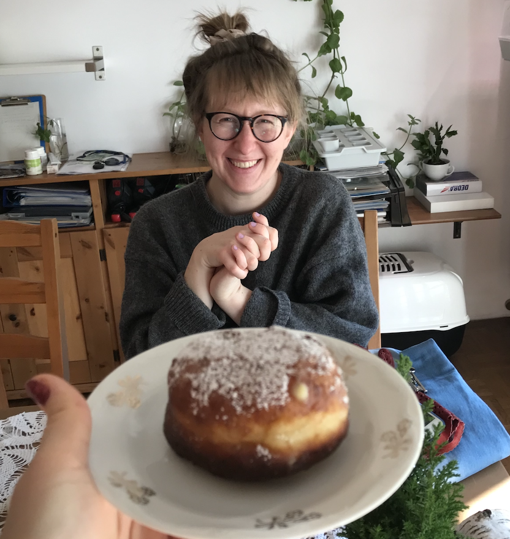

MSc Eng. Marta Łoskot
Junior Frontend Developer (React, JavaScript, TypeScript learner)
Junior Developer with an engineering degree (MSc Eng. in Civil Engineering, Silesian
University of Technology). I build web projects using React, modern JavaScript,
Node.js, and PostgreSQL, and I am currently expanding my skills in
TypeScript. With an analytical mindset from my engineering background, I
focus on clean code and well-structured UI. Motivated to learn test automation
(Playwright/E2E) and grow in an international team.
GitHub Portfolio: github.com/tusia313

| 2026 – present |
Modern JavaScript & TypeScript courses
ui.dev
|
| Full-Stack Task App |
Task management application with user authentication
|
| Travel App |
Interactive travel application with maps and cloud database
Code and repositories: github.com/tusia313 |
| 2023/12 – 2025/12 |
Frontend Development Course codewithania.com – Practical training in React, Node.js, Express, and PostgreSQL. Certificate completed. |
| 2024/02 – 2024/06 |
Modulo2dev | Katowice, PL Junior Frontend Developer Intern
|
| 2020/02 – 2021/10 |
Trakt sp. z o.o. sp. k. | Katowice, PL Assistant Road Designer
|
| 2019/03 – 2019/12 |
Regional Roads Authority | Katowice, PL Administration Assistant
|
| 2016/07 – 2016/11 |
TIM Invest | Katowice, PL Project Assistant
|
| location | Katowice / Kraków (Hybrid), Poland |
| loskotmarta@gmail.com | |
| phone | (+48) 503 933 861 |
| GitHub | https://github.com/tusia313 |
technical skills
Frontend
- HTML5, CSS3, SCSS (responsive design)
- JavaScript (ES6+) (Event Loop, async/await, DOM)
- React (components, hooks, state)
- TypeScript (currently learning / fundamentals)
Backend & Database Basics
- Node.js & Express.js (REST API endpoints)
- HTTP basics (status codes, headers, cookies)
- PostgreSQL & SQL (CRUD queries)
- Authentication (JWT, basic sessions)
Tools & Workflow
- Git & GitHub (branches, pull requests)
- Vite, npm
- Figma (inspecting UI designs)
AI-Assisted Tools
- Claude, Gemini, GitHub Copilot (code debugging, learning assistance, workflow speed)
Languages
- Polish (Native)
- English (B2 - communicative)
- Italian (A2)
- French (A1)
Education
2017 – 2018: Civil Engineering, Master of Science in Engineering (MSc Eng.), Silesian University of Technology, PL
2017 – 2018: Civil Engineering, Erasmus Exchange, University of Cassino and Southern Lazio, IT
2014 – 2017: Civil Engineering, Bachelor of Science in Engineering (BSc Eng.), Silesian University of Technology, PL
additional experience
2025: Website & Content Updates (freelance/community) – updating layouts and visual content.
2016 – 2022: Volunteer work in Poland and Jerusalem.
Summer 2018: Non-commissioned Officer Training, National Polish Armed Forces.